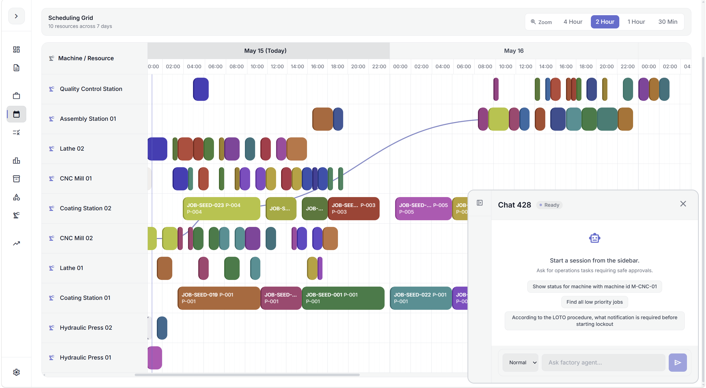
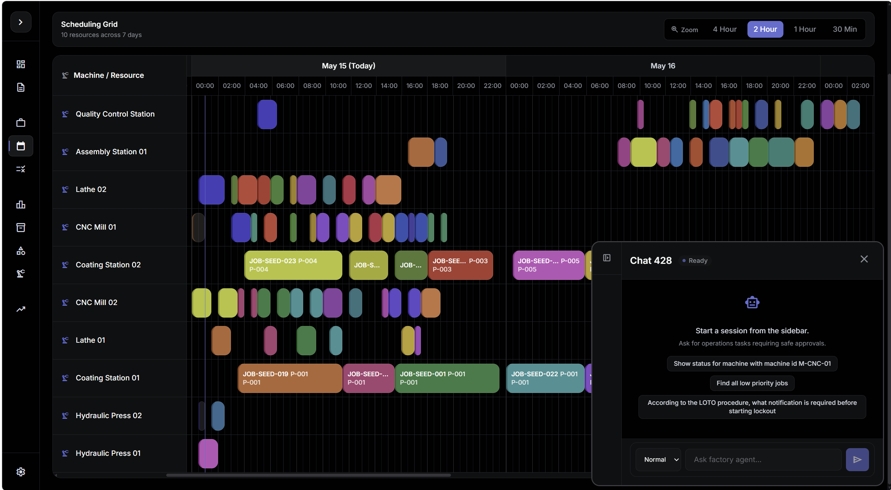
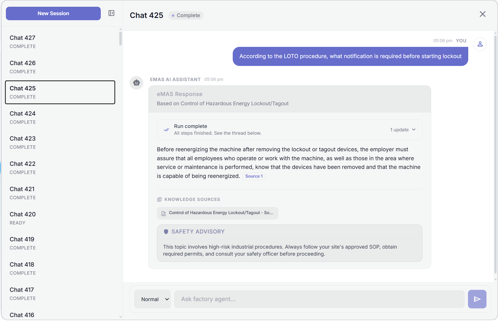
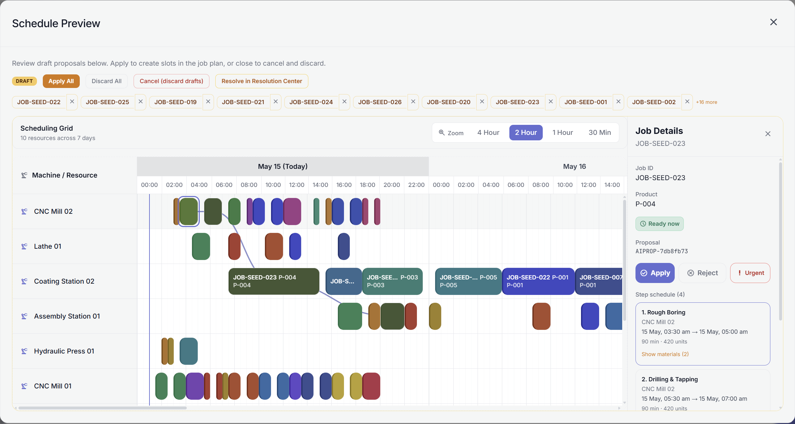
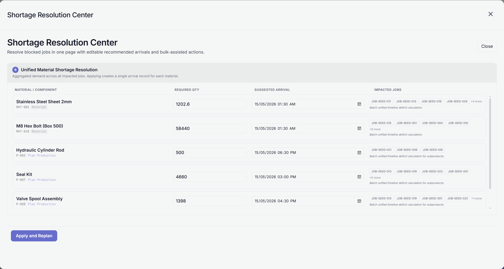

01
Watch Quick Demo
eMAS Industrial Agent
Autonomous factory intelligence & API orchestration
eMAS is an industrial AI system that connects an AI chatbot with factory operations. It uses a Go REST API and a Python FastAPI agent service to process user requests, retrieve safety documents, and call backend tools safely. The system uses LangGraph-style workflows, hybrid RAG, and deterministic guardrails to support safe AI-assisted factory operations.
Key Highlights
- Go Backend: Handles factory data, business logic, and API operations.
- OpenAPI Tooling: Lets the AI agent understand and call backend APIs safely.
- AI Agent Workflow: Uses LangGraph-style flow for multi-step planning, retries, and recovery.
- RAG Retrieval: Uses ChromaDB and hybrid search to retrieve safety documents and SOPs.
- Safety Guardrails: Checks AI-proposed actions before they run.
- Two-Step Write Flow: Stages changes first, validates them, then commits safely.
- Prompt Testing: Uses Promptfoo to test prompt accuracy and safety.
- Tracing & Monitoring: Uses LangSmith to debug agent steps, latency, and failures.
- Live Streaming: Shows agent reasoning and tool execution progress in real time.
Go
Swagger / OpenAPI
FastAPI
LangGraph
LangChain
LangSmith
Promptfoo
React
TypeScript
MySQL
GORM
Redis
ChromaDB
Tailwind CSS
Docker
Nginx
Vite
Axios